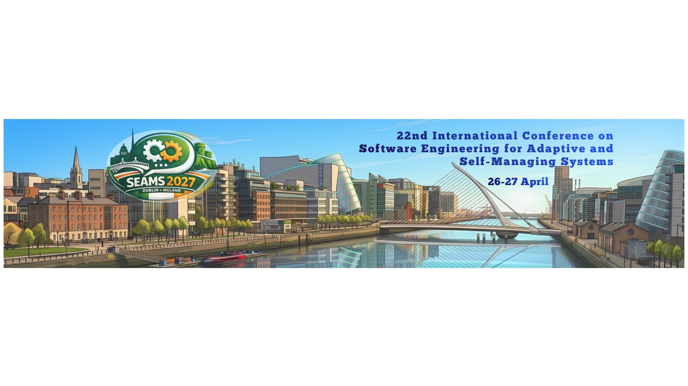

International Conference on
Software Engineering for Adaptive and Self‑Managing Systems

Today we are building an exciting future in which autonomous vehicles navigate complex environments, smart cities help solve public problems and achieve a higher quality of life, and service robots support social care workers or perform tasks that are too dangerous for humans. However, these software-intensive systems must continuously preserve and optimize their operation in the presence of uncertain changes in their operating environment, resource variability, evolving user needs, attacks and faults. In addition, the complexity of these systems demands them to adapt and manage themselves autonomously.
SEAMS is an ICORE-A ranked conference that applies software engineering methods, techniques, processes, and tools to support the construction of safe, performant, and cost-effective self-adaptive and autonomous systems that provide self-* properties like self-configuration, self-healing, self-optimization, and self-protection. The objective of SEAMS is to bring together researchers and practitioners from academia, industry, and government to investigate, discuss, examine, and advance the fundamental principles, state of the art, and the solutions addressing critical challenges of engineering self-adaptive and self-managing systems.